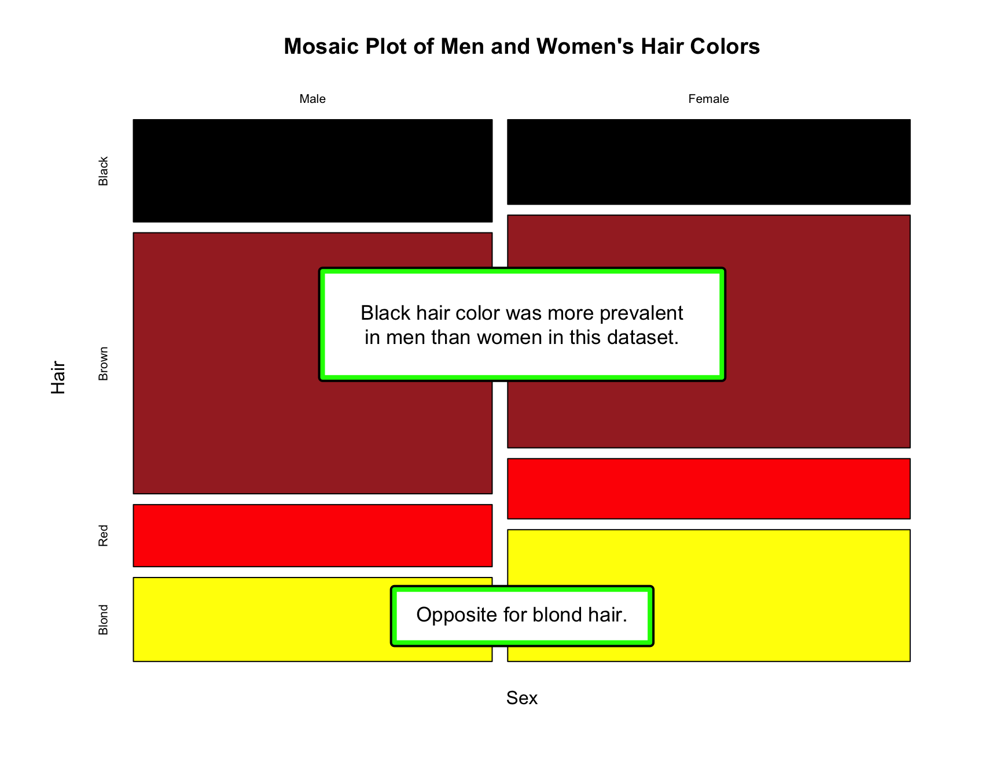
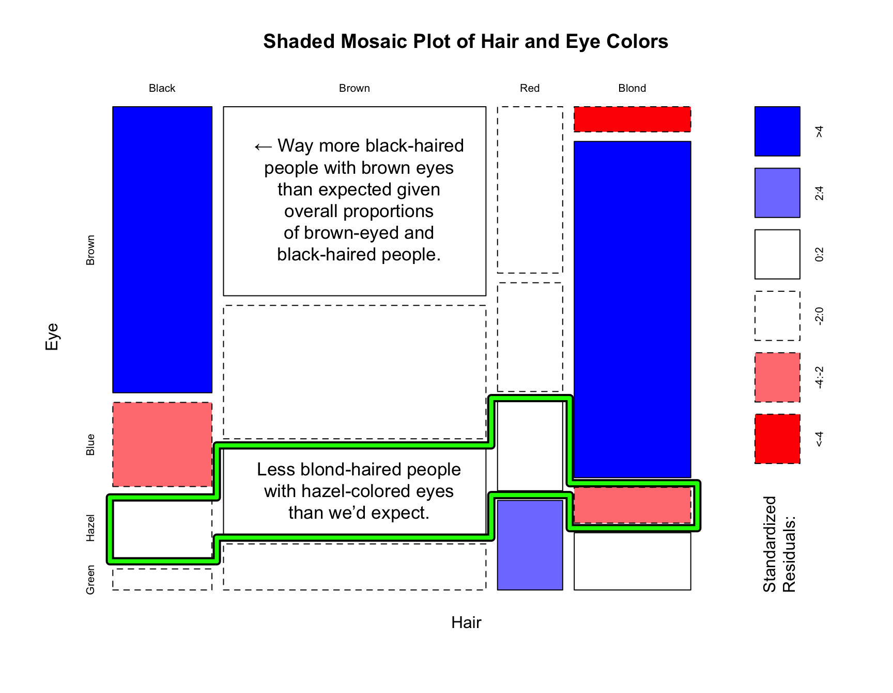
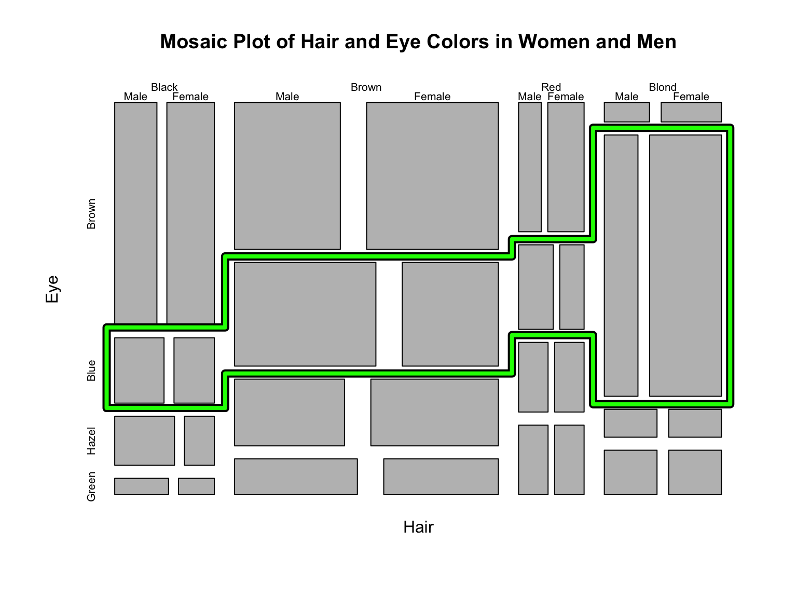
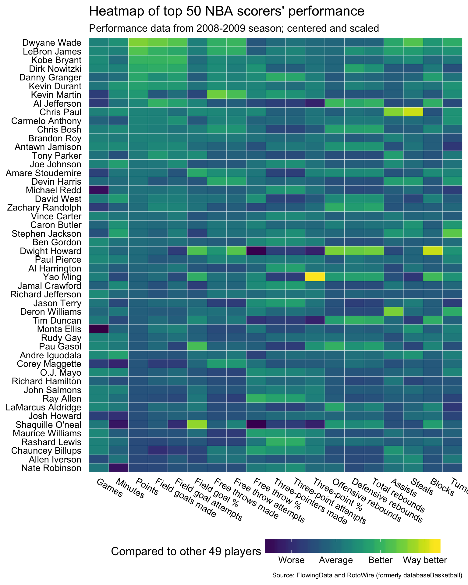
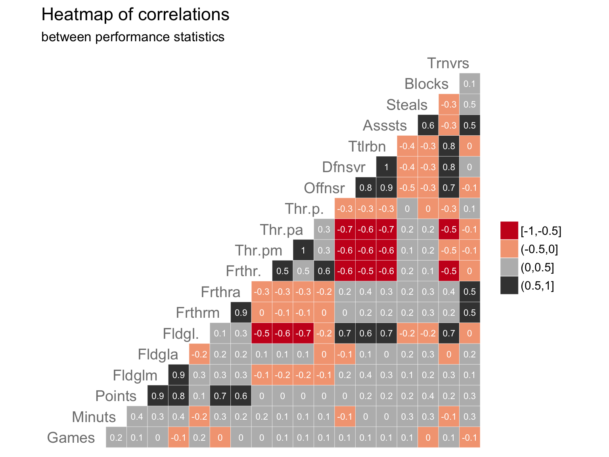
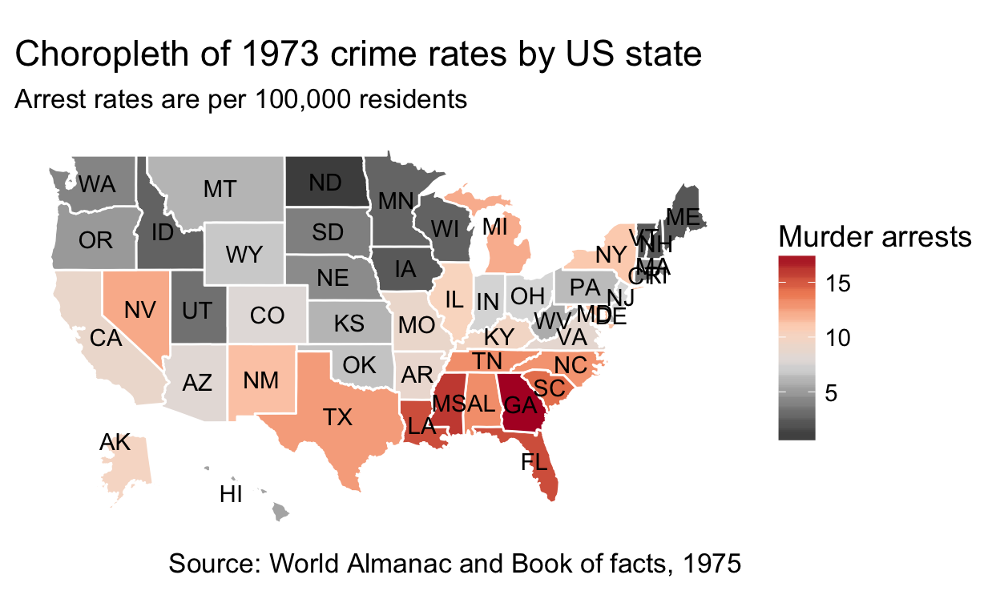
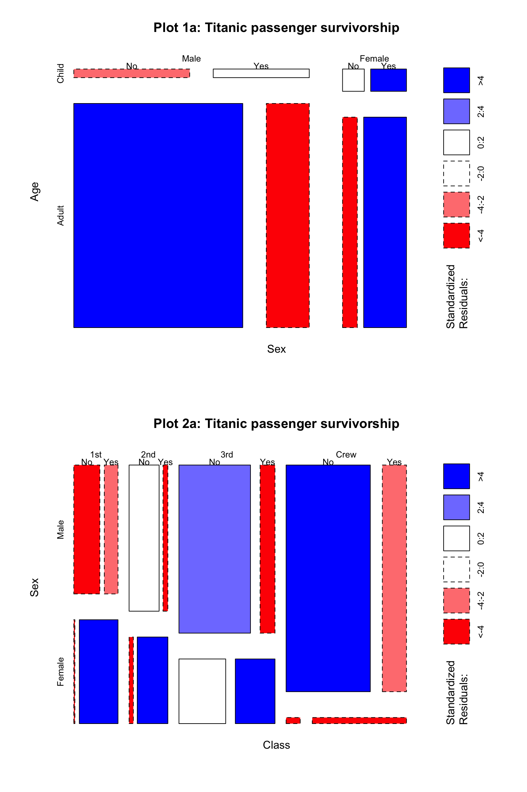
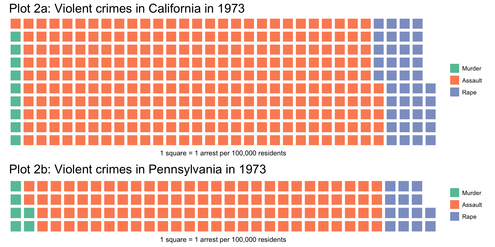
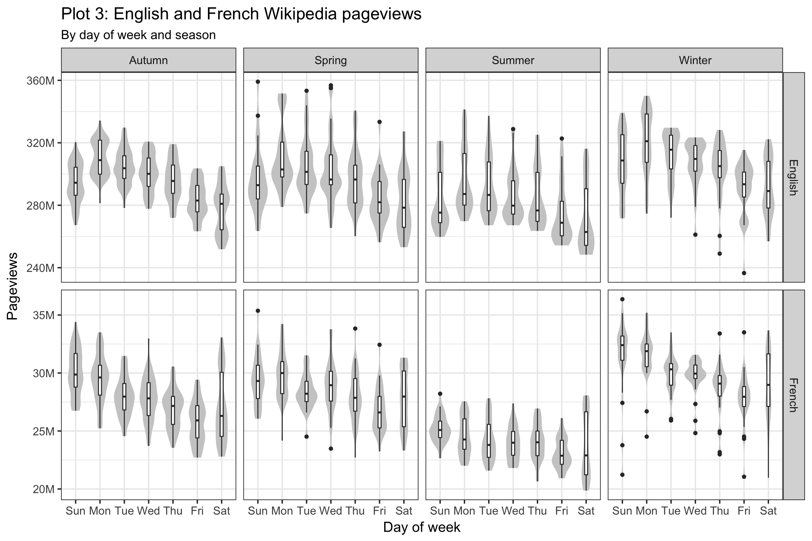

Introduction
Heat maps, stacked area plots, mosaic plots, choropleths – oh my! There are so many different ways to visually convey relationships and patterns in data! In this workshop on data visualization literacy, you’ll learn to recognize many popular types of charts and how to glean insights from them.
This workshop is available as open source. There is an interactive version (which should automatically send you to either mirror 1, mirror 2, or mirror 3) and a static version.
| Contact Information | |
|---|---|
| Work | mikhail at wikimedia dot org |
| Personal | mikhail at mpopov dot com |
| IRC | bearloga in #wikimedia-discovery, etc. |
| bearloga |
Terms and basics
Data visualization as storytelling
Graphical displays should:
- Show the data
- Induce the viewer to think about the substance rather than graphic design or format
- Avoid distorting the data
- Present many numbers in a small space
- Make large data sets coherent
- Encourage the eye to compare different pieces of data
– Edward R. Tufte, The Visual Display of Quantitative Information
Types of variables
- Quantitative variables have a numeric value and/or an ordering
- Continuous variables have an infinite range of possible values
- Examples: time, age, weight, lengths (height, distance, time spent online), drug dosage
- Quantitative variables that have limited possible values are discrete
- Examples: population size, number of times an event occurred, pageviews, number of questions a student got correct on a test
- Continuous variables are sometimes discretized by rounding if precision is not necessary
- Continuous variables have an infinite range of possible values
- Categorical / discrete / qualitative variables have a limited number of possible values:
- Nominal variables have two or more categories that do not have an intrinsic order
- Examples: gender, ethnicity, controls vs test group, operating system
- Ordinal variables are like nominal, but the categories have an ordering/ranking such as the Likert rating scale
- Categorical variables can also be created from quantitative variables
- Example: survey takers are often combined into age groups such as “18-24”
- Nominal variables have two or more categories that do not have an intrinsic order
Refer to levels of measurement for more information.
Things to look for
- Title (most plots should have this)
- Axis labels (almost all plots should have this)
- How many variables and their types
- Including ones used to dictate colors, shapes, patterns, sizes, opacities, etc.
- Independent (“predictor”) variables (e.g. time) are usually on the X (horizontal) axis
- Occasionally time is plotted on the vertical axis for specific reasons
- Dependent (“outcome” / “response”) variables are usually on the Y (vertical) axis
- Scales (especially log-transformed ones)
Common visualizations
Pies, Waffles, Bars, and Tables
A pie chart and a bar chart (sometimes called a bar plot) are an easy way to visually compare values. The pie chart – where the slices represent proportions of the whole – is excellent for 2-4 categories, the table is great for 1-8 categories, and the bars’ heights work well for comparing more than 5 categories.


Notice how the use of color allows us to compare survivorship within classes.
| Class | Did not survive | Survived |
|---|---|---|
| 1st | 122 | 203 |
| 2nd | 167 | 118 |
| 3rd | 528 | 178 |
| Crew | 673 | 212 |
In the past decade, a semi-alternative to the pie chart called waffle charts (or “square pie charts”) has gained popularity at representing relative sizes between groups. (See Women in IT – Squaring the Pie?.) Semi-alternative becauses waffles compare totals and pie charts compare percentages. As such, waffle charts are good for comparing relative sizes, but not at comparing relative %s.
Each square represents a certain number of units, which I think makes it easier to visually compare sizes of groups. For example, it is easier to compare 11 squares (2nd class passengers who survived) to 20 squares (1st class passengers who survived) than 1 pie slice to another pie slice that is 1.8 times bigger:

Histograms and Densities
A histogram shows the distribution of a continuous variable by splitting it into bins and counting how many observations fall into each bin (left). Sometimes those counts are divided by the total number of observations to yield proportions/probabilities instead (right). Note that the histogram on the right also includes a probability density estimate.

An important factor to watch out for is the bin size, which – ideally – was carefully chosen by the creator of the visualization. Bins that are too wide will cause the distribution to appear wide, while bins that are too narrow will make the distribution appear to noisy:
The three little histo-bears.
Comparing Distributions
When you see one of these, they are used for comparing distributions of a continuous variable (such as sepal length of Iris flowers) between different groups (such as different species):

The density plot on the left is like a smooth histogram that doesn’t discretize the variable into bins. The violin plot on the right is a rotated version that makes it easier to perform the comparison because the densities (distributions) are not overlapping.
A box-and-whiskers chart (also known as a box plot) allows you to visually compare the distributions by way of a five number summary which includes:
- Sample minimum (the smallest value)
- First quartile (Q1) which is the 25th percentile
- Second quartile (Q2) also known as the median
- Third quartile (Q3) which is the 75th percentile
- Sample maximum (the largest value)

My personal preference is when a violin plot and a box plot are combined so you still see the distribution in case there are multiple peaks (modes – something you can’t see with just a box-and-whiskers plot – but you also see the summaries:

Notice how the box plot hides the three modes.
Multiple variables
Scatter plots are the most popular and simplest way to investigate relationships between quantitative variables. You have one variable on the X axis and one variable on the Y axis. Each point represents a single unit from your dataset (e.g. a subject of an experiment):

Shape and color of the points are determined by the species. Shapes are often used together with color to make the graphic better for colorblindness and grayscale printing.
Data scientists and analysts often use scatterplot matrices to look at many different relationships between pairs of variables simultaneously:

These are usually not present in final drafts of reports and are instead used as tools during the exploratory data analysis step.
At first glance there is a lot going on in that particular matrix, but really there are three main components that we can focus on just one at a time:
- the upper triangle panels have basic scatter plots with points colored according to species for each pair of variables,
- the diagonal panels have histograms of the individual variables, and
- the lower triangle panels are also scatterplots, but with ellipses tracing the two-dimensional densities (assuming Normality).
Line charts are the most common way to visualize time series data, with time usually as the horizontal X axis and range of a quantitative variable as the vertical Y axis:
You may notice that the linear scale and the difference in magnitude makes it difficult to notice patterns for French Wikipedia. Perhaps this chart can be improved later in the workshop?
Other visualizations
Mosaic plots
Mosaic plots are used to visualize the relationships between two or more qualitative variables, and they are incredibly rare. While they are very useful once you learn how to read them, that step can be very difficult and so it is unsurprising that they don’t show up more. They’re often used by statisticians during exploratory data analysis to perform a visual check before performing a statistical test of independence.
We will use these to examine distribution of hair and eye colors in ~600 statistics students at University of Delaware reported by Snee, R. D. in The American Statistician journal in 1974:

We can extend a mosaic plot to include standardized residuals (also called studendized residuals) from a log-linear model. Cells representing negative residuals – meaning there are fewer observations than would have been expected under independence – are drawn as red with broken borders; positive residuals – meaning more observations than would be expected – are drawn in blue with solid borders.

We can also look at the proportions across all three variables:

What the third mosaic plot tells us:
- Blond was the most prevalent hair color among those with blue eyes.
- More brown-haired men had blue eyes than brown-haired women.
- More blond-haired women had blue eyes than blonde-haired men.
Stacked area plots
A stacked area plot is a way to visualize multiple amounts/proportions changes over time.
Beginning with 1925, the number of people over the age of 64 has increased dramatically, especially after 1975.
Heat maps
Heatmaps are a graphical representation of matrices. For example, we can visualize the following dataset of top 50 NBA players’ performance statistics from the 2008-09 season (obtained from RotoWire, formerly databaseBasketball):

Some observations:
- Dwight Howard was the best at blocking shots
- Dwight Howard was also one of the worst at making free throws
- Yao Ming was the best at making three-pointers (by % successful out of total attempts)

Some observations:
- Negative correlations (in red):
- Players who made a higher percentage of field goals (“Fldgl.”) stayed away from trying to make three-point shots (“Thr-pa” is “Three-point attempts”).
- Positive correlations (in grey):
- Players who attempted/made more field goals (“Fldgla”/“Fldglm”) also scored more points.
Tree maps
Treemapping is a way to visualize hierarchical (nested) data as rectangles within other rectangles, with the area of the rectangle representing the proportion and sometimes a shade or color representing another variable. It is not dissimilar to a mosaic plot!
Almost all of the crew was male and almost 80% of them died. Most of the 3rd class passengers did not make it either, while more than 85% of women in 1st and 2nd classes survived.
Choropleths
Choropleths are geographical maps that are colored and/or shaded according to some variable such as population density.

Networks and graphs
Network diagrams are for visualizing graphs (from graph theory) and networks (from network theory) where there are nodes (vertices) connected by links (edges). Their goal is to visually represent relationships between units. For example, using the Wikipedia Clickstream data from November 2017 we can start at the article on net neutrality and visualize a neighborhood of articles that are adjacent to the central one:
.png)
The darkness of the edges connecting the vertices represents how many clicks there were between the pairs of articles. We can see that there are more clicks between “net neutrality” and “digital rights” than between “net neutrality” and “human rights”, but way more clicks between “net neutrality” and “Wikipedia Zero”.
Scales and transformed data
Sometimes the author of the visualization has chosen to apply a transformation to the data because the data is skewed. It is important to watch out for these, especially logarithmic scales.

Let us revisit the pageviews data from earlier by utilizing the logarithmic axis:
Notice how the French Wikipedia pageviews are no longer dampened by English Wikipedia pageviews’ magnitude.
It is possible (but rare) to encounter logarithmically scaled time axes, which are helpful when you have long tails caused by outliers:

Group activity
Pair up with someone sitting next to you and pick one of the following 3 visualizations. You and your partner(s) should agree on the same one.
- This part is done individually (3 minutes)
- Note 2-3 interesting observations.
- Reminder:
- Once you’ve identified the variables involved, you are looking for relationships between them.
- You’re also looking for patterns and outliers.
- This part is done with your partner(s) (2-3 minutes)
- Share your insights with your partner(s).
- Check if they agree with your observations.
- If they didn’t notice the same things as you, explain how you arrived at your interpretation of the chart.
A different take on the Titanic data:

A different take on the violent crime rates data:

A different take on the Wikipedia pageviews data:

Assessment
Some questions to verify that you understand the core concepts in data visualization:
Appendix
Visual essays
- A visual introduction to machine learning by Stephanie Yee and Tony Chu
- Exploring Histograms by Aran Lunzer and Amelia McNamara
- Algorithms Tour: How data science is woven into the fabric of StitchFix
- An Interactive Visualization of Every Line in Hamilton by Shirley Wu
- Constructed Career Paths from Job Switching Data by Nathan Yau
Collections
Further reading
Making your own
- Visualize This: The FlowingData Guide to Design, Visualization, and Statistics by Nathan Yau
- R Graphics Cookbook by Winston Chang
- ggplot2: Elegant Graphics for Data Analysis by Hadley Wickham
- Data Visualization with Python and JavaScript by Kyran Dale
- SVG Animations: From Common UX Implementations to Complex Responsive Animation by Sarah Drasner
- D3.js in Action by Elijah Meeks